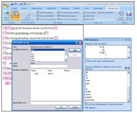

Software
All of the tools developed by NINES are available for download or online use. More information about each can be found by clicking the corresponding links.
Collex is the collecting/exhibiting tool that powers NINES. Visit the Collex page and the Collex blog to learn more.

Juxta is a textual collation tool for scholars. Visit the Juxta page and the Juxta blog to download the newest version.

Ivanhoe is an interactive playspace for exploring textuality. Visit the IVANHOE page and the Ivanhoe blog to start a new game.

Tools and Interfaces
The development of these standards-compliant, open-source technologies began under the auspices of Applied Research in Patacriticism (ARP) and the Speculative Computing Laboratory (SpecLab), its research affiliate at the University of Virginia. SpecLab was originally formed by Johanna Drucker and Jerome McGann as a theory-discussion group devoted to conceiving (and conceptually designing) software that would answer to the critical/interpretive needs of humanities scholars.
With Mellon funding, ARP, the the software development arm of NINES, was formed. IVANHOE, Juxta and Collex were among the first working projects, and remain under development to varying degrees by NINES. While the Collex interface is an integral part of NINES, we believe that our mission can be greatly advanced if it also pursues significant software development work that will excite humanist scholars.
RECOMMENDED TOOLS
As more and more tools emerge to enable online scholarship, the choices for scholars can become bewildering. The NINES team has recently begun testing a number of tools that enable digital scholarship, and will update this page regularly with recommendations.
Tool Suite for Automated TEI Encoding

Gerald Gannod, Laura Mandell and Holly L. Connor of Miami University have developed a Tool Suite for Automated TEI Encoding, currently in beta software distribution. By making use of the ubiquitous Microsoft Word interface, this tool allows scholars to mark up texts without heavily depending upon XML editing software. To learn more, contact us at $$$$
Know of a tool NINES should recommend? Contact us at $$$$.